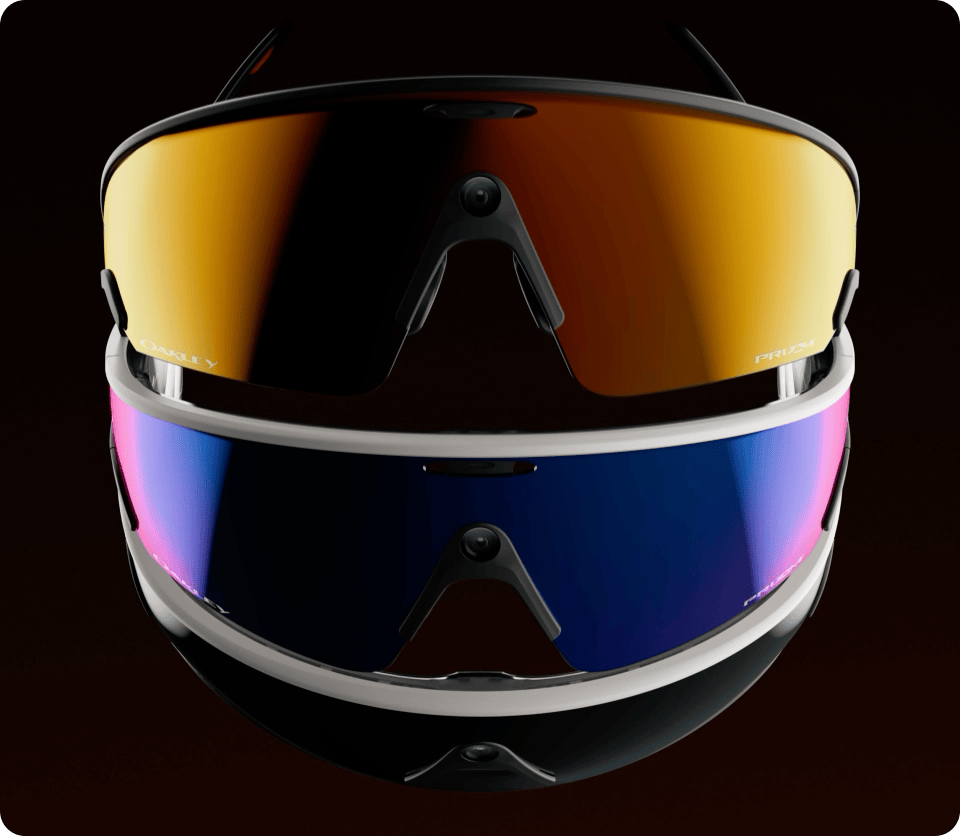
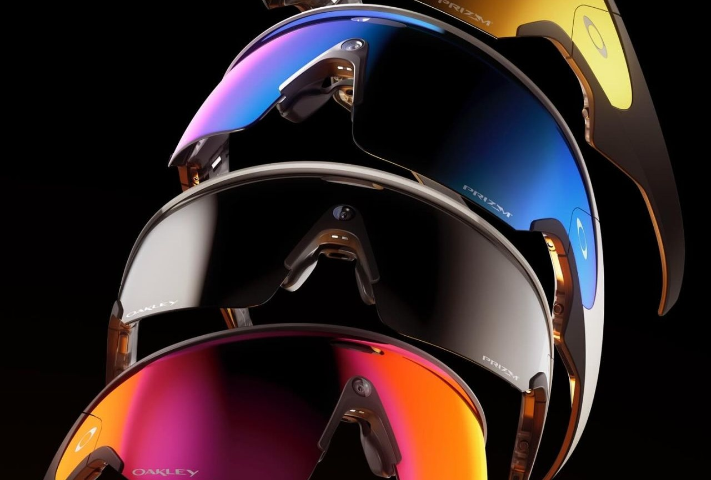

¿Tiene Beneficios?
Unas gafas inteligentes potenciadas con intelignecia artificial que aparte del uso básico de unas gafas para correr exploran un mundo gigante al poder darte estadísticas concretas a tiempo real sin descentrarte.

Gafas Inteliges, Corre Inteligente
Las nuevas gafas de Meta x Oakley diseñadas para los deportistas.
He escogido estas gafas como dispositivo porque personalmente me gusta correr y me parecen una buena idea y el cambio natural a las opciones de hoy en día, es verdad que ahora mismo no sustuiran al clasico reloj de repente por temas económicos y que el reloj esta muy perfeccionado de cara a las estadísticas de fuera de carrera, pero creo que es el paso natural y que en un futuro estas solas serviran para mucho más.

Unas gafas inteligentes potenciadas con intelignecia artificial que aparte del uso básico de unas gafas para correr exploran un mundo gigante al poder darte estadísticas concretas a tiempo real sin descentrarte.
Estas gafas deportivas inteligentes surjen con la idea de mejoran el rendimiento, ya sea con la capacidad de que te pueda decir estadísticas a tiempo real o simples hechos como quitar distraciones como mirar al reloj.

Las Oakley Vanguard tienen un diseño envolvente de montura O Matter y lenter Prizm 24K "transmisión lumínica del 11%". Integran una cámara ultra gran angular "12MP", batería de 36 horas. Compatibles con iOS y Android.
Muestran información en como tu velocidad, distancia, ritmo cardiaco... Directamente en tu campo de visión sin necesidad de quitar la vista.
Te permiten grabar tus entrenamientos directamente desde el punto de vista de las gafas con una alta calidad de hasta 3K.
Se puede iniciar grabaciones, ajustar configuraciones, pedir estadísticas a tiempo real... Mediante comandos de voz.
Puedes sincronizar tus entrenamientos y metricas en aplicaciones como Strava y Garmin para tener tus entrenos en la palma de tu mano.
Te recomendamos que vayas a la web del fabricante